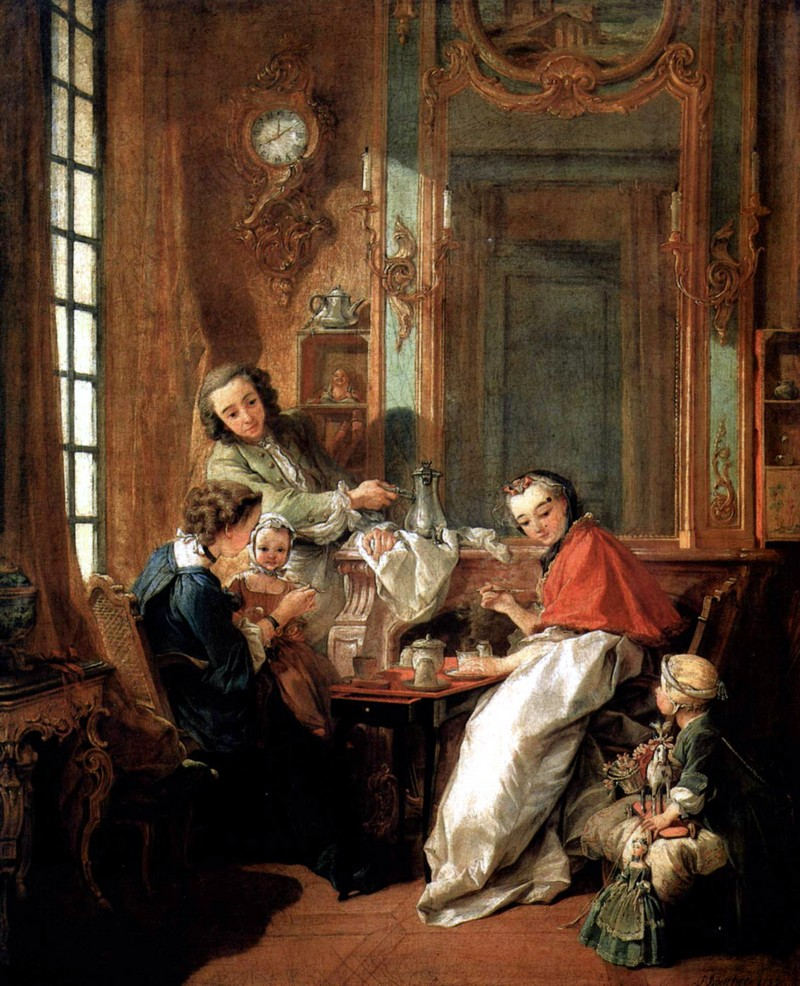

На смену трагическому ХVII-му веку пришёл легкомысленный ХVIII-й, а тёмный тяжёлый стиль барокко был вытеснен светлым и лёгким стилем рококо. Он возник в Европе около 1720-х годов и продолжался до 1770 – 80-х.
Он развивался и достиг совершенства прежде всего во Франции, откуда распространился на другие страны, подвергаясь там многочисленным региональным изменениям.
Началом рококо был «стиль регентства», (связанный с временем регентства Филиппа Орлеанского 1715 – 1723. Временем расцвета рококо были годы царствования Людовика ХV (поэтому французский вариант рококо часто называют «стилем Людовика ХV).
Культура рококо была ярко выраженной дворянской культурой, являясь типичным проявлением фазы упадка. В произведениях А.Ватто, Ф.Буше, О. Фрагонара мы видим представителей класса дворянства в процессе их повседневной жизни. Здесь нет воинских подвигов, философских раздумий, актов милосердия, свидетельств духовного совершенства. Человечество измельчало: мужчины и женщины лишены индивидуальности, все похожи друг на друга, почти одинаково одеты (все по последней моде!). Они развлекаются в театре (предпочитают комедии), ездят на остров Киферу (чтобы без помех предаваться там амурным делам), отдыхают на лоне природы и занимаются лёгким флиртом. Много музицируют. Всё это изображают модные живописцы на своих полотнах, где колорит ласкает глаз мягкой и нежной гармонией пастельных цветов, где погода всегда прекрасная, нет ни холода, ни жары, а только приятное тепло.
Искусство не избегает античных мотивов, особенно тех, где можно изобразить обнажённое тело. Здесь оно всегда идеально, не в пример Рембрандту, хотя и несколько анемично.
Проиллюстрируем сказанное работами самых известных мастеров стиля рококо.
Жак Антуан Ватто (1684 – 1721)
По поводу первой и последней в этом списке картин следует заметить, что живописцы ХVII и XVIII вв., работая «на заказ» в стиле барокко или рококо, не теряли ощущения реальности. В некоторых работах они восстанавливали связь с жизнью, изображая простых земных людей в простой будничной обстановке (как, например, савояра, актёров за кулисами, автопортрет).
Франсуа Буше ( 1703 – 1770)
Живопись Буше не нуждается в комментариях – она апеллирует к интимным сферам человеческой психики и физиологии. Нормальному человеку всегда приятно видеть молодых прекрасных женщин, пухленьких кудрявых младенцев, нарядных дам и атлетически сложенных мужчин. Зрелище праздности, забав и веселья подсознательно влияет на настроение зрителя картины: он как бы принимает участие во всей этой вакханалии, и тем облегчает душу от насущных забот и негативных эмоций. Не случайно произведения Ватто и Буше хранятся в лучших музеях Европы.

Следует отметить универсальность таланта Буше: он не менее любовно и вдохновенно изображает простой деревенский пейзаж с людьми, занятыми трудом, с небогатыми, но по-своему красивыми постройками и обильной зеленью. Здесь уже нет причудливости рококо – здесь вступает в права здоровый реализм ХVIII века, или, как его осторожно называют, «внестилевое направление».
Жан Оноре Фрагонар (1732 – 1806)
Фрагонар – ученик Буше и достойный продолжатель его дела. В некотором отношении творчество Фрагонара ещё более заостряет характерные особенности рококо, доведя их до того предела, за которым следует конец данного стиля и возникает необходимость обновления ситуации в сфере искусства. Герои и героини Фрагонара – нарядные дамы, прекрасные пастушки, купальщицы, влюблённые пары, купидоны, аллегорические фигуры. Всё так же актуальны персонажи из античной мифологии: Венеры, Амуры, Дианы… Живопись Фрагонара отличается декоративностью, лёгкостью кисти, изяществом. Природа здесь пышная и цветущая, погода всегда благоприятствует играм и забавам весьма легко одетых представителей человечества.
Такое искусство подобно завесе, скрывающей от глаз высшего общества насущные проблемы и язвы жизни. Оно призвано создавать иллюзию благополучия и «вечного праздника», в то время, как во Франции неудержимо назревают силы, готовые преобразовать существующий строй.
И действительно, Великая французская революция подвела итог всей эпохе рококо, вместе с которой завершилось и творчество Фрагонара. На смену его утончённому искусству приходит героический классицизм.
В 90-е годы Художник лишается и заказчиков, и славы. На нём закончилась эпоха рококо.
Л. Миронова,
15.10.2016